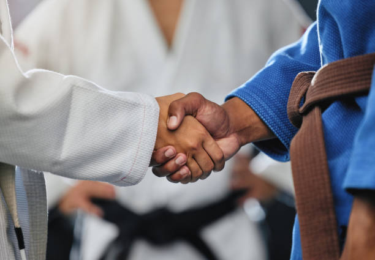

Welcome to the Judo - The Gentle Way website! On this website you will find a short overview and interesting insights into the art of practicing judo, its history and core philosophy. As this website serves an educational purpose, the information provided is in an easy and understandable language, so people of young age are able to understand the essentials of judo. Interested guests of our website can reach out to us for more information and future correspondence regarding finding a club in your region for starting to practice judo. In this sense, we wish you an exciting time exploring our website and learn about the great martial arts of judo.
This is Kano Jigoro (10 December 1860 - 4 May 1938), the founder of judo. Back in the day, Kano was practicing and teaching the martial arts of jujutsu along with his former teachers, usually being thrown and losing most of his training fights. This motivated him to study certain movement patterns a long time, which resulted in finding new ways of breaking the posture of the opponent. When he presented the results of his study to one of his former teachers, he approved, which led Kano to found his own school and publish the essentials of his new system. He named his system 'judo' which is a combination of jū (柔), meaning 'pliancy', and dō, which means literally 'The Way'. That is the reason why the martials arts of judo is often referenced as 'The Gentle Way'.
One of the key values in Judo is respect. Although judo is a competitive sport, the safety and respect towards your partner or oponent should always have top priority. The key idea of practicing judo is not always striving to win a fight, but to grow together with your partner in training and to take care of each other, especially when you are fighting against each other in a randori, which is the Japanese term for a training fight. That means that you and your partner should both get the opportunity to practice different techniques like throws and grab handles or to try new ones that you learned in training.
When it comes to real tournaments, you of course want to win and bring home a medal. You are welcome to show your skills and preferences of techniques that you learned in your training and to give your best to win the fight. Nevertheless, that does not mean that you can stop to care about your oponent when competing in a tournament. Like in normal training, you are obliged to pay attention to the reactions of your oponent: If the oponent communicates you signals of pain, e.g. when you are choking your oponent and he or she taps twice on the mat, you are obliged to immidiately stop all actions and see if your oponent passed out or is doing ok.